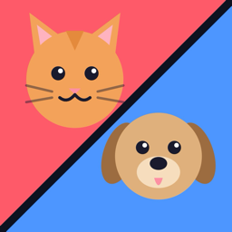

Paw Clash
Same-screen party games with pets · 宠物同屏对战小游戏
Paw Clash is a set of quick face-off games for 2–4 players on one phone or iPad: Paw Hockey, Snack Grab and Quick Paw. It works fully offline.
Paw Clash 是一组同一台手机/iPad 上 2–4 人面对面玩的小游戏：爪爪冰球、抢零食、快爪抓鼠。完全离线可玩。
Support · 帮助
Restore a purchase · 恢复购买
Open Settings (gear icon) → Restore purchase. Family Sharing is supported.
打开设置（齿轮图标）→ 恢复购买。支持家人共享。
Something not working? · 遇到问题？
Open an issue here and we will reply: github.com/limutong/paw-clash/issues
请在上面的链接提交问题，我们会回复。
Privacy · 隐私
© 2026 Paw Clash